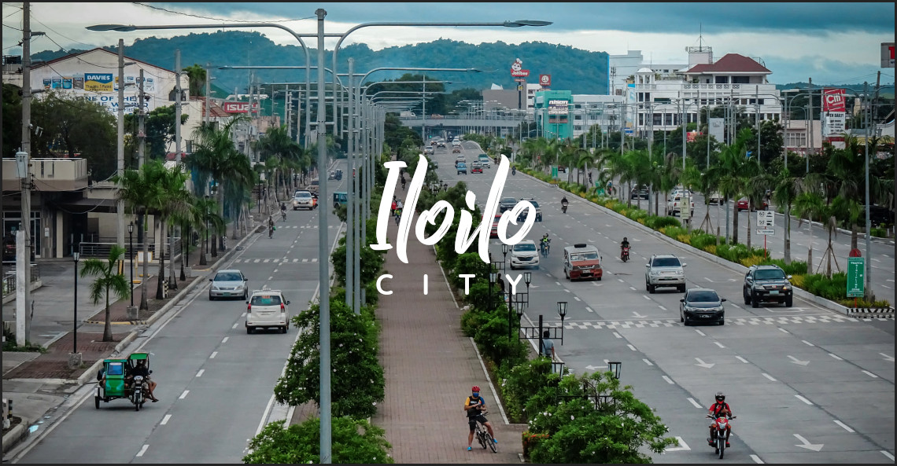

ILOILO CITY

The next three decades saw the moderate growth of Iloilo City with the establishment of fish ports, an international seaport, and other commercial firms.
Iloilo City also became the Regional Center of Western Visayas.
In 1977, a Comprehensive Urban Development Plan for Iloilo City was approved and was adopted by the Sangguniang Panlungsod.
The Land Use Plan and Zoning Ordinance was the implementing tool. However, the 1977 Plan was unable to cope with the demands of rapid urbanization.
By the end of 1993, a multi-sectoral group prepared the 1994-2010 Comprehensive Development Plan of Iloilo City to amend the old plan and address the present and future challenges of urban development.
The plan, however, was not carried pending the approval of the Housing and Land Use Regulatory Board (HLURB).
FACTS ABOUT ILOILO
The word “Iloilo City” came from the shape of the city, cut by the river which looks like the shape of a nose, “Irong-Irong”, nose-like, later became Iloilo.
Other accounts point the origin of the name to a fish.
Monicker: “Most Loyal and Noble City” or “La Muy Leal Y Noble Ciuded de Iloilo” in Spanish.
This is an inscription in the Coat of Arms from the Royal Decree of 1896 in recognition of the people’s loyalty to the Spanish crown.
A replica of the Spanish Crown architechtural structure can be seen in the Arevalo District of the City.
BACK TO THE HOMEPAGE